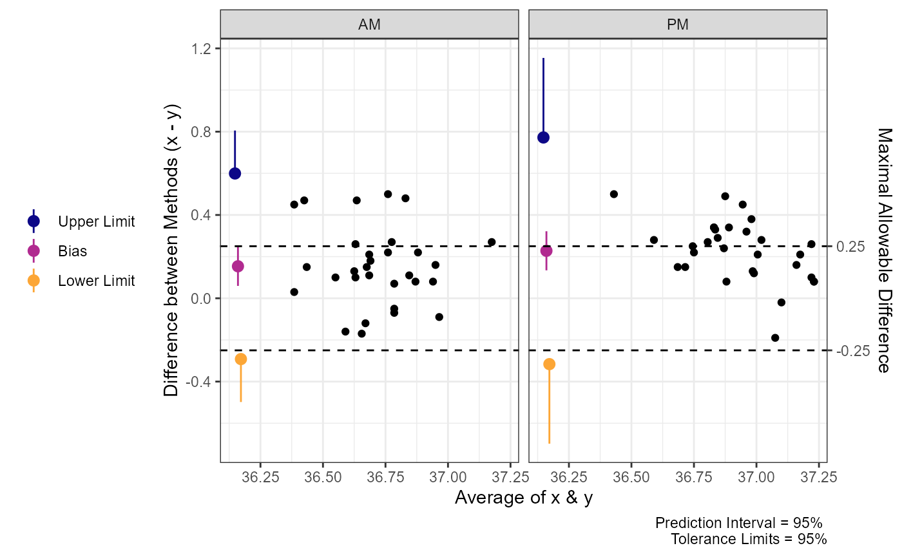
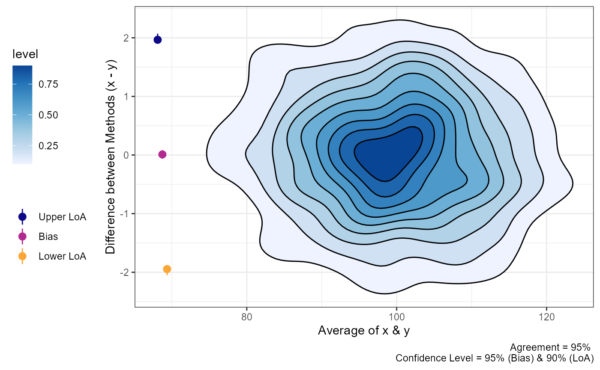

Agreement & Tolerance Limits
Aaron R. Caldwell
Last Updated: 2025-12-20
Source:vignettes/agreement_analysis.Rmd
agreement_analysis.RmdIn this vignette I will briefly demonstrate how
SimplyAgree calculates agreement and tolerance limits. This
vignette assumes the reader has some familiarity with “limits of
agreement” (Bland-Altman limits) and is familiar with the concept of
prediction intervals. Please read the references listed in this vignette
before going further if you are not familiar with both
concepts.
library(SimplyAgree)
data(temps)Agree or Tolerate?
Francq, Berger, and Boachie (2020) pose this question in a
paper published in Statistics in Medicine. Traditionally, those
working in medicine or physiology have defaulted to calculating some
form of “limits of agreement” that Bland and
Altman (1986) recommended in their
seminal paper. The recommendation by Bland and
Altman (1986) was only an
approximation, and that has undergone many modifications (e.g., Bland and Altman
1999; Zou 2011) to improve the
accuracy of the agreement interval and their associated confidence
intervals. Meanwhile, the field of industrial statistics has focused on
calculating tolerance limits. There are R packages, such as the
tolerance R package available on CRAN, that are entirely
dedicated to calculating tolerance limits. It is important to note that
tolerance is not limited to the normal distribution and can be applied
to other distributions (please see the tolerance package by Young (2010) for more details).
However, in the agreement studies typically seen in medicine, tolerance
limits may be a more accurate way of determining whether two
measurements are adequately close to one another.
To quote Francq, Berger, and Boachie (2020):
In terms of terminology, tolerance means, in this context, that some difference between the methods is tolerated (the measurements are still comparable in practice). Furthermore, the tolerance interval is exact and therefore more appropriate than the agreement interval.
In this package, tolerance limits refer to the “tolerance” associated with the prediction interval for the difference between 2 measurements. The calculative approach (detailed much further below) involves calculating the prediction interval for the difference between two methods (i.e., an estimate of an interval in which a future observation will fall, with a certain probability, given what has already been observed) and then calculating the confidence in the interval (i.e., tolerance). Therefore, if we want a 95% prediction interval with 95% tolerance limits, we are calculating the interval in which 95% of future observations (prediction) with only a 5% probability (1-tolerance) the “true” prediction interval limits are greater/less than the upper/lower tolerance limits.
Personally, I find the use of prediction intervals and tolerance
limits more attractive for 2 reasons: 1) the coverage of the prediction
intervals and their tolerance limits is often better than confidence
intervals for agreement limits, and 2) the interpretation of the
tolerance limits is much clearer. For a greater discussion of this
topic, please see the manuscript by Francq,
Berger, and Boachie (2020)
and check out their R package BivRegBLS.
Tolerance
In SimplyAgree we utilize a generalized least square
(GLS) model to estimate the prediction interval and tolerance limits.
The function uses the gls function from the
nlme R package to build the model. This allows a
very flexible approach for estimating prediction intervals and
tolerance limits.
We can use the tolerance_limits function demonstrate the
basic calculations. In this example (below), we use the
temps data set to measure the differences between
esophageal and rectal temperatures between different times of day
(tod) and controlling for the intra-subject
correlation.
tolerance_limit(
data = temps,
x = "trec_pre", # First measure
y = "teso_pre", # Second measure
id = "id", # Subject ID
condition = "tod", # Identify condition that may affect differences
cor_type = "sym" # Set correlation structure as Compound Symmetry
)
#> Agreement between Measures (Difference: x-y)
#> 95% Prediction Interval with 95% Tolerance Limits
#>
#> Condition Bias Bias CI Prediction Interval Tolerance Limits
#> AM 0.1537 [0.0595, 0.2478] [-0.2919, 0.5993] [-0.4982, 0.8055]
#> PM 0.2280 [0.1342, 0.3218] [-0.3162, 0.7722] [-0.6982, 1.1542]Calculative Approach
Overall, the model is fit using the gls function, and,
for those interested, I would suggest reading book by Pinheiro and Bates
which details the function1. This function is different than the
linear, or linear mixed, models that are utilized in calculating limits
of agreement because it accommodates correlated errors and/or unequal
variances.
Arguments Influencing the Model
There are a number of options with the arguments provided in the
tolerance_limit function. The only required arguments are
x, y, and data which dictate the
data frame, and the columns that contain the 2 measurements. The
id argument, when specified, identifies the column that
contains the subject identifier or some time of nesting within which the
data should be correlated to some degree. The time,
argument is utilized when the data come from a repeated measures or time
series data, and indicates the order of the data points. The
condition argument identifies some factor within a data
frame that may effect the mean difference (and variance) of the
differences between the 2 measurements. The cor_type
argument can also be utilized to specific 1 of 3 possible correlation
structure types. Lastly, savvy users can specify a particular variance
or correlation structure using the weights and
correlation arguments which directly alter the model being
fit using gls.
Prediction
After the model is fit, the estimated marginal means (EMM), and their
associated standard errors (SEM), are calculated based on the
gls fit model using emmeans. The standard
error of prediction (SEP) for each EMM is then calculated using the SEM
and residual standard error from the model (formula below).
\[ SEP = \sqrt{SEM^2 + S^2_{residual} } \]
After the SEP is calculated, the prediction interval can be calculated with following:
\[ PI = EMM \pm t_{1-\alpha/2, df} \cdot SEP \]
NOTE: the degrees of freedom (df) are calculated using an approximation of Satterthwaite (1946) (see Kuznetsova, Brockhoff, and Christensen (2017) for an explanation of this implementation in R).
Tolerance
The type of tolerance limit calculation can be set using the
tol_method argument with options including “approx” and
“perc”. Tolerance limits are calculated either through the “Beta
expectation” approximation (tol_method = "approx") detailed
by Francq, Berger, and Boachie (2020) or through a parametric
bootstrap method (tol_method = "perc"). The bootstrap
methods re-samples from the model and, after a certain number of
replicates (default is 1999), calculates the bounds the prediction
interval based on the quantiles of the replicates for the lower and
upper limit. This is preferred for its accuracy and power, but is
extremely slow which may involve computations lasting greater
than 2 minutes for even small data sets. The approximation is the
default only because it is substantially quicker. Users should be aware
that the bootstrap method will likely be more accurate and provide
smaller (i.e., more forgiving) tolerance limits.
The approximate tolerance limits based on the work of Francq, Berger, and Boachie (2020) are calculated as the following:
\[
TI = EMM \pm z_{1-\alpha_1/2} \cdot SEP \cdot
\sqrt{\frac{df}{\chi^2_{\alpha_2,df}}}
\] NOTE: \(\alpha_1\) refers to the alpha-level for
the prediction interval (modified by the pred_level
argument; 1-pred_level) whereas \(\alpha_2\) refers to the alpha-level for
the tolerance limit (modified by the tol_level argument;
1-tol_level).
Example
In the temps data we have different measures of core
temperature at varying times of day. Let us assume we want to measure
pre-exercise agreement between esophageal and rectal temperature while
controlling for time of day (tod).
test1 = tolerance_limit(data = temps,
x = "teso_pre",
y = "trec_pre",
id = "id",
condition = "tod")
test1
#> Agreement between Measures (Difference: x-y)
#> 95% Prediction Interval with 95% Tolerance Limits
#>
#> Condition Bias Bias CI Prediction Interval Tolerance Limits
#> AM -0.1537 [-0.2478, -0.0595] [-0.5993, 0.2919] [-0.8055, 0.4982]
#> PM -0.2280 [-0.3218, -0.1342] [-0.7722, 0.3162] [-1.1542, 0.6982]Agreement
The agreement limit calculations in SimplyAgree are a
tad more constrained than the tolerance limit. There are only 3 types of
calculations that can be made: simple, replicate, and nested. The simple
calculation each pair of observations (x and y) are
independent; meaning that each pair represents one
subject/participant. Sometimes there are multiple measurements taken
within subjects when comparing two measurements tools. In some cases the
true underlying value will not be expected to vary (i.e., replicates or
“reps”), or multiple measurements may be taken within an individual
and these values are expected to vary (i.e., nested).
The agreement_limit function, unlike the other agreement
functions in the package (i.e., agree_test,
agree_reps, and agree_nest), allows users to
make any of the three calculations all-in-one function. Further,
agreement_limit assumes you are only interested in the
outermost confidence interval of the limits of agreement and therefore
one-tailed confidence intervals are only calculated for the LoA (i.e.,
there is no TOST argument).
Arguments Influencing the LoA Calculations
Users of the this function have a number of options. The only
required arguments are x, y, and
data which dictate the data frame, and the columns that
contain the 2 measurements. The id argument, when
specified, identifies the column that contains the subject identifier.
This is only necessary if it is a replicate or nested design. The type
of design is dictated by data_type argument. Additionally,
the loa_calc function dictates how the limits of agreement
are calculated. Users have the option of computing Bland and Altman (1999) or MOVER (Zou 2011; Donner and Zou 2012) limits of
agreement (calculations detailed below). I strongly recommend utilizing
the MOVER limits of agreement over the Bland-Altman limits (Zou 2011; Donner and Zou 2012) as it is
the more conservative of the two options.
Simple Agreement
In the simplest scenario, a study may be conducted to compare one
measure (e.g., x) and another (e.g., y). In
this scenario each pair of observations (x and y) are
independent; that means that each pair represents one
subject/participant that is uncorrelated with other pairs.
The data for the two measurements are put into the x and
y arguments.
# Calc. LoA
a1 = agreement_limit(data = reps,
x = "x",
y = "y")
# print
a1
#> MOVER Limits of Agreement (LoA)
#> 95% LoA @ 5% Alpha-Level
#> Independent Data Points
#>
#> Bias Bias CI Lower LoA Upper LoA LoA CI
#> 0.4383 [-0.1669, 1.0436] -1.947 2.824 [-3.0117, 3.8884]
#>
#> SD of Differences = 1.217Calculation Steps
The reported limits of agreement are derived from the work of Bland and Altman (1986) and Bland and Altman (1999).
LoA
\[ LoA = \bar d \pm z_{1-(1-agree)/2} \cdot S_d \]
wherein \(z_{1-(1-agree)/2}\) is the value of the normal distribution at the given agreement level (default is 95%), \(\bar d\) is the mean of the differences, and \(S_d\) is the standard deviations of the differences.
Confidence Interval
- Calculate variance of LoA
\[ S_{LoA} = S_d \cdot \sqrt{\frac{1}{N}+ \frac{z^2_{1-(1-agree)/2}}{2 \cdot(N-1)} } \]
- Calculate Left Moving Estimator
Bland-Altman Method
\[ LME = t_{1 - \alpha, \space df} \cdot S_{LoA} \] MOVER Method
\[ LME = S_d \cdot \sqrt{\frac{z_{1-\alpha}^2}{N} + z^2_{1-agree} \cdot (\sqrt{\frac{df}{\chi^2_{\alpha,df}}}-1)^2} \]
- Calculate Confidence Interval
\[ Lower \space LoA \space C.I. = Lower \space LoA - LME \]
\[ Upper \space LoA \space C.I. = Upper \space LoA + LME \]
Repeated Measures Agreement
In many cases there are multiple measurements taken within subjects
when comparing two measurements tools. In some cases the true underlying
value will not be expected to vary (i.e.,
data_type = "reps"), or multiple measurements may be taken
within an individual and these values are expected to vary
(i.e., data_type = "nest").
Replicates
This limit of agreement type is for cases where the underlying values do not vary within subjects. This can be considered cases where replicate measure may be taken. For example, a researcher may want to compare the performance of two ELISA assays where measurements are taken in duplicate/triplicate.
So, you will have to provide the data frame object with the
data argument and the names of the columns containing the
first (x argument) and second (y argument)
must then be provided. An additional column indicating the subject
identifier (id) must also be provided.
a2 = agreement_limit(x = "x",
y = "y",
id = "id",
data = reps,
data_type = "reps",
agree.level = .8)
a2
#> MOVER Limits of Agreement (LoA)
#> 80% LoA @ 5% Alpha-Level
#> Data with Replicates
#>
#> Bias Bias CI Lower LoA Upper LoA LoA CI
#> 0.7152 [-1.5287, 2.9591] -1.212 2.642 [-4.797, 6.2274]
#>
#> SD of Differences = 1.5036Calculative Steps
- Compute mean and variance
\[ \bar d_i = \Sigma_{j=1}^{n_i} \frac{d_{ij}}{n_i} \] \[ \bar d = \Sigma^{n}_{i=1} \frac{d_i}{n} \]
\[ s_i^2 = \Sigma_{j=1}^{n_i} \frac{(d_{ij} - \bar d_i)^2}{n_i-1} \]
- Compute pooled estimate of within subject error
\[ s_{dw}^2 = \Sigma_{i=1}^{n} [\frac{n_i-1}{N-n} \cdot s_i^2] \]
- Compute pooled estimate of between subject error
\[ s^2_b = \Sigma_{i=1}^n \frac{ (\bar d_i - \bar d)^2}{n-1} \]
- Compute the harmonic mean of the replicate size
\[ m_h = \frac{n}{\Sigma_{i=1}^n m_i^{-1}} \]
- Compute SD of the difference
\[ s_d^2 = s^2_b + (1+m_h^{-1}) \cdot s_{dw}^2 \]
- Calculate LME
MOVER Method
\[ u = s_d^2 + \sqrt{[s_d^2 \cdot (1 - \frac{n-1}{\chi^2_{(1-\alpha, n-1)}})]^2+[(1-m_h^{-1}) \cdot (1- \frac{N-n}{\chi^2_{(1-\alpha, N-n)}})]^2} \]
\[ LME = \sqrt{\frac{z_{\alpha} \cdot s_d^2}{n} + z_{\beta/2}^2 \cdot (\sqrt{u}-\sqrt{s^2_d} )^2} \]
Bland-Altman Method
\[ S_{LoA}^2 = \frac{s^2_d}{n} + \frac{z_{1-agree}^2}{2 \cdot s_d^2} \cdot (\frac{S_d^2}{n-1} + (1-\frac{1}{m_{xh}})^2 \cdot \frac{S_{xw}^4}{N_x - n} + (1-\frac{1}{m_{yh}})^2 \cdot \frac{S_{yw}^4}{N_y - n}) \]
\[ LME = z_{1-\alpha} \cdot S_{LoA} \]
- Calculate LoA
\[ LoA_{lower} = \bar d - z_{\beta/2} \cdot s_d \]
\[ LoA_{upper} = \bar d + z_{\beta/2} \cdot s_d \]
- Calculate LoA CI
\[ Lower \space CI = LoA_{lower} - LME \]
\[ Upper \space CI = LoA_{upper} + LME \]
Nested
This is for cases where the underlying values may vary within
subjects. This can be considered cases where there are distinct pairs of
data wherein data is collected in different times/conditions within each
subject. An example would be measuring blood pressure on two different
devices on many people at different time points/days. The method
utilized in agreement_limit is similar to, but not the
exact same as those described by Zou (2011). However, the results should be
approximately the same as agree_nest and should
provide estimates that are very close to those described by Zou (2011).
a3 = agreement_limit(x = "x",
y = "y",
id = "id",
data = reps,
data_type = "nest",
loa_calc = "mover",
agree.level = .95)
a3
#> MOVER Limits of Agreement (LoA)
#> 95% LoA @ 5% Alpha-Level
#> Nested Data
#>
#> Bias Bias CI Lower LoA Upper LoA LoA CI
#> 0.7046 [-1.5572, 2.9664] -2.153 3.562 [-7.4979, 8.9071]
#>
#> SD of Differences = 1.4581Calculation Steps
- Model
A linear mixed model (detailed below) is fit to estimate the bias (mean difference) and variance components (within and between subject variance).
\[ \begin{aligned} \operatorname{difference}_{i} &\sim N \left(\alpha_{j[i]}, \sigma^2 \right) \\ \alpha_{j} &\sim N \left(\mu_{\alpha_{j}}, \sigma^2_{\alpha_{j}} \right) \text{, for subject j = 1,} \dots \text{,J} \end{aligned} \] 2. Extract Components
The two variance components, (\(s_b^2\) and \(s_w^2\) for \(\sigma^2\) and \(\sigma_{\alpha_j}^2\)), are estimated from the model. The sum of both (\(s_{total}^2\)) is the total variance, and grand intercept represents the bias (mean difference, \(\bar d\)).
The harmonic mean is also calculated.
\[ m_h = \frac{n}{\Sigma_{i=1}^n m_i^{-1}} \]
- Compute LME
MOVER Method
\[ u_1 = (s_b^2 \cdot ((n-1)/(\chi^2_{\alpha,n-1})-1))^2 \]
\[ u_2 = ((1-1/m_h) \cdot s_w^2 \cdot ((N-n)/( \chi^2_{\alpha,N-n} -1))^2 \]
\[ u = s_{total}^2 + \sqrt{u_1 + u_2} \]
\[ LME = \sqrt{\frac{z^2_{\alpha} \cdot s_d^2}{n} + z^2_{\beta/2} \cdot(\sqrt{u} - \sqrt{s^2_d})^2} \]
Bland-Altman Method
\[ S_{LoA} = \frac{s_b^2}{n} + z_{agree}^2 / (2 \cdot s_{total}^2) \cdot ((s_b^2)^2/(n-1) + (1 - 1/m_h)^2 \cdot (s_{w}^2)^2/(N-n)) \] \[ LME = z_{1-\alpha} \cdot S_{LoA} \]
- Calculate LoA
\[ LoA_{lower} = \bar d - z_{\beta/2} \cdot s_d \]
\[ LoA_{upper} = \bar d + z_{\beta/2} \cdot s_d \]
- Calculate LoA CI
\[ Lower \space CI = LoA_{lower} - LME \]
\[ Upper \space CI = LoA_{upper} + LME \]
How to Test a Hypothesis
Unlike the “test” functions, agreement_limits and
tolerance_limits do not test a hypothesis agreement, but
only estimate the limits. It is up to the user to determine if the
limits are within a maximal allowable difference. However, the results a
maximal allowable difference can be visualized against the
tolerance/agreement limits using the delta argument for the
plot method.
res1 = tolerance_limit(
data = temps,
x = "trec_pre", # First measure
y = "teso_pre", # Second measure
id = "id", # Subject ID
condition = "tod", # Identify condition that may affect differences
cor_type = "sym" # Set correlation structure as Compound Symmetry
)
plot(res1, delta = .25) # Set maximal allowable difference to .25 units
Checking Assumptions
The assumptions of normality, heteroscedasticity, and proportional
bias can all be checked using the check method for either
agreement or tolerance limits.
The function will provide 3 plots: Q-Q normality plot, standardized residuals plot, and proportional bias plot.
All 3 plots will have a statistical test in the bottom right corner2. The Shapiro-Wilk test is included for the normality plot, the Bagan-Preusch test for heterogeneity, and the test for linear slope on the residuals plot. Please note that there is no formal test of proportional bias for the tolerance limits, but a plot is still included for visual checks.
An Example
test_agree = agreement_limit(x = "x",
y = "y",
data = reps)
check(test_agree)
test_tol = tolerance_limit(x = "x",
y = "y",
data = reps)
check(test_tol)Proportional Bias
As the check plots for a1 show, proportional bias can
sometimes occur. In these cases Bland and Altman
(1999) recommended adjusting the
bias and LoA for the proportional bias. This is simply done by include a
slope for the average of both measurements (i.e, using an intercept +
slope model rather than intercept only model).
For either agreement_limit or
tolerance_limit functions, this can be accomplished with
the prop_bias argument. When this is set to TRUE, then the
proportional bias adjusted model is utilized. Plots and checks of the
data should always be inspected.
test_tol = tolerance_limit(x = "x",
y = "y",
data = reps,
prop_bias = TRUE)
print(test_tol)
#> Agreement between Measures (Difference: x-y)
#> 95% Prediction Interval with 95% Tolerance Limits
#>
#> Average of Both Methods Bias Bias CI Prediction Interval
#> 3.905 -0.4670 [-1.3842, 0.4502] [-2.8876, 1.9537]
#> 5.240 0.3513 [-0.1816, 0.8842] [-1.9513, 2.654]
#> 7.395 1.6723 [0.5218, 2.8228] [-0.846, 4.1906]
#> Tolerance Limits
#> [-3.6396, 2.7057]
#> [-2.6667, 3.3694]
#> [-1.6284, 4.9729]
# See effect of proportional bias on limits
plot(test_tol)
# Confirm its effects in proportional bias check plot (should be horizontal now)
check(test_tol)Log transformation
Sometimes a log transformation may be a useful way of “normalizing”
the data. Most often this is done when the error is proportional to the
mean. The interpretation is also easy because the differences (when back
transformed) can be interpreted as ratios. The log transformation
(natural base) can be accomplished with the log_tf
argument.
tolerance_limit(
data = temps,
log_tf = TRUE, # natural log transformation of responses
x = "trec_pre", # First measure
y = "teso_pre", # Second measure
id = "id", # Subject ID
condition = "tod", # Identify condition that may affect differences
cor_type = "sym" # Set correlation structure as Compound Symmetry
)
#> Agreement between Measures (Ratio: x/y)
#> 95% Prediction Interval with 95% Tolerance Limits
#>
#> Condition Bias Bias CI Prediction Interval Tolerance Limits
#> AM 1.004 [1.0016, 1.0068] [0.9921, 1.0165] [0.9865, 1.0222]
#> PM 1.006 [1.0036, 1.0088] [0.9913, 1.0213] [0.981, 1.0321]If you prefer to interpret the differences as a percentage
difference, you can do this by setting the log_tf_display
argument to “sympercent”. This stands for the “symmetric percentage
difference” which is the log transformed differences between the
measures, \(s\% = (log(x)-log(y) ) \cdot 100\%
= log(x/y) \cdot 100\%\), and can be interpreted as a percentage
difference between the two paired measures.
tolerance_limit(
data = temps,
log_tf = TRUE, # natural log transformation of responses
log_tf_display = "sympercent", # display results as sympercent
x = "trec_pre", # First measure
y = "teso_pre", # Second measure
id = "id", # Subject ID
condition = "tod", # Identify condition that may affect differences
cor_type = "sym" # Set correlation structure as Compound Symmetry
)
#> Sympercent Difference between Methods (s%)
#> 95% Prediction Interval with 95% Tolerance Limits
#>
#> Condition Bias Bias CI Prediction Interval Tolerance Limits
#> AM 0.4188 [0.1615, 0.6761] [-0.7959, 1.6335] [-1.3562, 2.1938]
#> PM 0.6184 [0.3622, 0.8747] [-0.8705, 2.1074] [-1.9196, 3.1564]Visualizing “Big” Data
Sometimes there may be a lot of data and individual points of data on
mean difference visualization may be less than ideal. In order to change
the plots from showing the individual data points we can modify the
geom argument.
set.seed(81346)
x = rnorm(750, 100, 10)
diff = rnorm(750, 0, 1)
y = x + diff
df = data.frame(x = x,
y = y)
a1 = agreement_limit(data = df,
x = "x",
y = "y",
agree.level = .95)
plot(a1,
geom = "geom_point")
plot(a1,
geom = "geom_bin2d")
#> `stat_bin2d()` using `bins = 30`. Pick better value `binwidth`.
plot(a1,
geom = "geom_density_2d")
plot(a1,
geom = "geom_density_2d_filled")
plot(a1,
geom = "stat_density_2d")